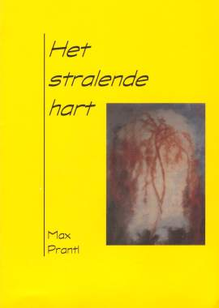
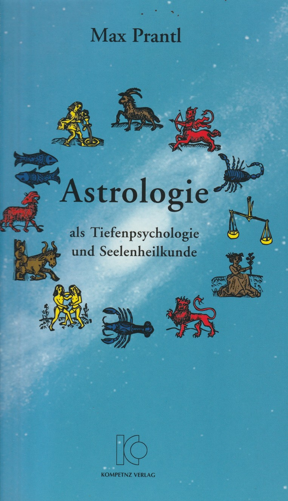

Boeken
Het geschreven werk van Max Prantl stamt uit zijn diensttijd in de oorlog en de periode daarna. Het is een tijd van zijn innerlijke crises en verlichting, waardoor hem duidelijk werd wat hij naar buiten wilde brengen. Wie het fundamentele werk van Prantl ‘Der Mensch ohne Angst. Licht aus der Herzmitte’ (momenteel in het Duits gelukkig weer opnieuw uitgegeven, in het Nederlands onder de titel Het Stralende Hart verkrijgbaar) maar ook zijn overige boeken kent, is op de hoogte van de hoge geestelijke visie van deze in 1957 overleden schilder en dichter uit Innsbruck. Het was zijn niet aflatende wens, de mens van vandaag uit de kerker van zijn aards vernauwde verstandelijke denken naar de vrijheid van een geestelijk bewustzijn te brengen, dat zijn oorsprong heeft in het diepste wezen van het Godskind ‘mens’.
Al zijn geschriften vormen de dragende pijlers van een brug die naar een weg naar oneindige verten en hoogten leidt naar dat eeuwige thuis, waar Christus in de gelijkenis van de verloren zoon en zijn terugkeer over sprak.
Aan het werk van Max Prantl ligt een kenmerkende Michaëlische trek ten grondslag: de strijd om de mens te bevrijden van de angst die hem - aangezien het een gebrek aan vertrouwen in God, de Oneindige Liefde is - elke toegang tot het geestelijke rijk in zichzelf verspert. Angst is enkel te overwinnen doordat de mens ontwaakt tot geestelijk bewustzijn. Dit ontwaken leidt hem echter naar het kennen en beleven van de liefde, die als oerlicht en oerkracht van de Godheid in al het geschapene heerst. Ze is de ‘anima mundi’, de ‘wereldziel’ van de oudste geestelijke stromingen. In de christelijke esoterie draagt ze de naam ‘Maria’: de in de schepping gestalte gevende en tot gestalte wordende Oneindige Liefde. Maria niet als ‘moeder Gods’, maar: God als moeder, die in zijn moederlijke aspect alles wat door Gods wil is voortgebracht in haar schoot bergt, koestert en tot voleinding ontwikkelt.
Opmerkelijk aan het werk van Prantl is, dat hij spreekt vanuit een eigen beleving van de hogere werkelijkheid. Niet als beleving van een gevoel, stemming of emotie, als het ware in een soort geestvervoering of euforie, maar als een als vanzelfsprekend beleefde, nuchtere wijze van bestaan, een hoger bestaansniveau dan wij als gewone materieel ingestelde mensen kennen. Hij leeft klaarblijkelijk vanuit een geestelijk niveau met een werkelijkheidswaarde, waar hij zich stap voor stap ‘binnenvecht’. Begrippen als strijd, eigen verantwoordelijkheid, kiezen, geloofwaardigheid en concreet leven vanuit innerlijk licht zijn voor hem vanzelfsprekende elementen. Dit realiteitsbesef vormt de grote kracht van zijn werk, waardoor hij ons veel te zeggen heeft. Tevens is het de reden, waarom zijn geschriften de zo vaak als aangenaam ervaren vrijblijvendheid missen. Terwijl hij zich baseert op christelijke waarheden, stijgt hij er tevens bovenuit en beweegt hij zich in een gebied waar de traditionele christelijke leer steeds dogmatische barrières voor heeft gelegd (dat hij de kerk niet te vriend heeft kunnen houden spreekt dan ook vanzelf).
De volgende boeken zijn in het Nederlands vertaald. De boeken zijn helaas niet meer te bestellen, maar ze zullen in de loop der tijd allemaal elektronisch aangeboden worden. De boeken "Het Stralende Hart" en "Astrologie" zijn nu gratis te downloaden als eBook vanaf de pagina Boeken of vanaf de eigen pagina.
|  |
Max Prantl's hoofdwerk is toch wel 'Het stralende hart’ (oorspronkelijke titel: ‘Der Mensch ohne Angst. Licht aus der Herzmitte’), dat een getrouw en indringend verslag geeft van zijn innerlijke verlichtingsweg en de daaruit voortvloeiende inzichten. “Ik wil de Waarheid, hoe die ook moge zijn…” Dit boek legt niemand weg zonder erdoor geraakt te zijn. Meer informatie: Het Stralende Hart ISBN 90-806534-1-1 |
|
‘Onbegrepen licht’ is een ander belangwekkend werk, waarin Prantl o.a. de bijbelse evangeliën en de openbaring van Johannes in eigentijdse taal en moderne spirituele inzichten verwoordt . Het toont een nieuw inzicht en geeft een antwoord op de vragen, die gesteld worden door degenen die niet meer tevreden zijn met de kerkelijke dooddoeners en zelf willen leren nadenken. Ook zijn in dit boek Prantl's 'profetische' geschriften opgenomen, waarin hij de positie en verantwoordelijkheid van de mens tegenover God en tegenover zijn eigen bestaan duidelijk en scherp weergeeft. Hier is geen ruimte meer voor vrijblijvendheid, hier wordt een duidelijke keuze van ons verwacht. Meer informatie: Onbegrepen Licht ISBN 90-806534-2-x |
|
|
De sprookjesachtige verhalenrijkdom van ‘Kerstrozen’ neemt ons mee naar een belevingswereld, waar we de dingen weer met onze werkelijke (geestelijke) ogen leren zien. Al lezende dringen diepe geestelijke waarheden tot ons door, waar de verhalen mee doorspekt zijn. Om in één adem uit te lezen, maar ook telkens weer te herlezen. Naast vele reproducties staan in dit boek ook Prantls gedichten. Het is hier duidelijk merkbaar dat geestelijke werkelijkheden in feite niet met aardse woorden te beschrijven zijn. Prantl gebruikt dan ook warme, meeslepende, hoogreikende beelden om ons als het ware ‘mee te nemen’ naar wat hij wil tonen. Hij was een Oostenrijker en als zodanig goed bekend met de indrukwekkende schoonheid van een majestueus berglandschap met zijn luchten, bloemen, weiden, hoogten en diepten - ook in geestelijke zin. Meer informatie: Kerstrozen ISBN 90-806534-3-8 |
|
|
'Astrologie als dieptepsychologie en zielengeneeskunde'. Omdat de eigenlijke mens een geestelijke werkelijkheid binnen een materieel omhulsel is, zijn ook zijn ‘lot’ en levensomstandigheden uitdrukking van zijn innerlijke wezen. Gezien onze verbondenheid met de ‘kosmos’ is het dan ook logisch dat ‘de sterren’ in hun eigen taal aangeven wat er op geestelijk terrein gaande is. Op die manier verstaan wordt de astrologie tot een ‘dieptepsychologie en zielengeneeskunde’ die ons helpt ons werkelijke, geestelijke levensdoel te bereiken. Zoals een Duits astroloog schreef: 'Slechts wie zich diepgaand in de astrologische materie heeft verdiept, kan inschatten wat voor onmetelijke geestelijke rijkdom Max Prantl ons in dit werk heeft geschonken'. Meer informatie: Astrologie Downloaden: PDF, EPUB, DOCX ISBN 90-806534-4-6 |
|

|
Bloeiende rozen: wegwijzers naar ons aardse en eeuwige thuis. Het verhaal als zodanig is al opgenomen in de bundel 'Kerstrozen', maar hier is nu gekozen voor een zelfstandige uitgave ervan. Het staat boordevol met volkomen natuurlijk gebrachte spirituele wijsheden, in een sprookjesachtig verhaal dat iedereen in zichzelf zal herkennen. Een prachtig geschenkboekje van 64 pagina's, ideaal voor op het nachtkastje, op reis of gewoon in de boekenkast. Meer informatie: Bloeiende Rozen ISBN 90-806534-7-0 |

|
‘Aus dunklen Talen’, tot voor kort het enige boek van Prantl dat nu nog in het Duits te krijgen was, bevat naast de vijf meeslepende ‘sprookjes’ een aantal fraaie reproducties. Een sieraad! Het boek is helaas niet meer verkrijgbaar. Een sprookje uit het boek is hier te lezen (Duits): Ingemin. |
|
Der Mensch ohne Angst: Licht aus der Herzmitte is het hoofdwerk van Max Prantl, oorspronkelijk uitgegeven in het Duits. Voor meer informatie kunt de Duitse pagina (Licht aus der Herzmitte) bekijken of de pagina van de Nederlandse vertaling: Het Stralende Hart. Helaas is dit boek moeilijk/niet te verkrijgen op het moment. U kunt het met onderstaande gegevens proberen te vinden bij een boekhandel, of contact opnemen met ons: info@maxprantl.org. ISBN 3-931142-11-6 |
|
|  |
Astrologie als Tiefenpsychologie und Seelenheilkunde is de oorspronkelijke Duitstalige versie van het boek 'Astrologie als dieptepsychologie en zielenheelkunde'. Voor meer informatie kunt de pagina van de Nederlandse vertaling lezen: Astrologie. Helaas is dit boek moeilijk/niet te verkrijgen op het moment. U kunt het met onderstaande gegevens proberen te vinden bij een boekhandel, of contact opnemen met ons: info@maxprantl.org. ISBN 3-931142-12-4 |